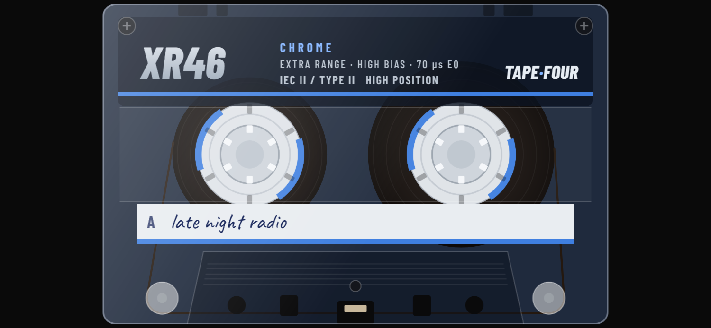
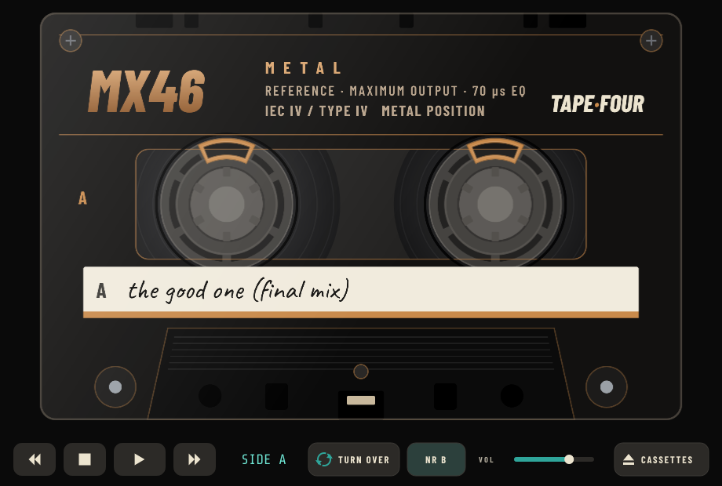
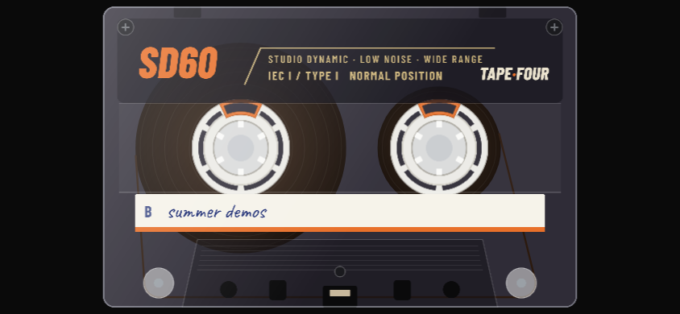
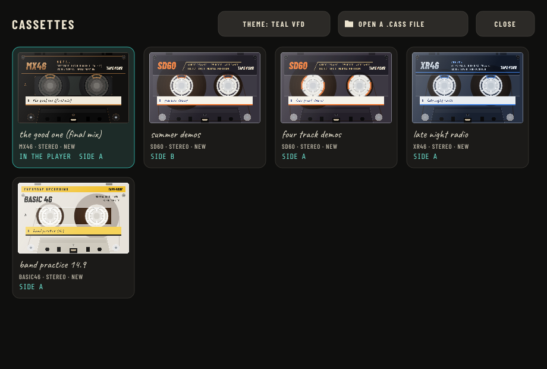
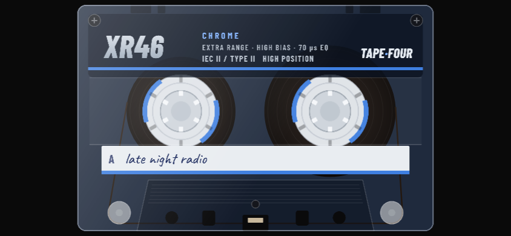
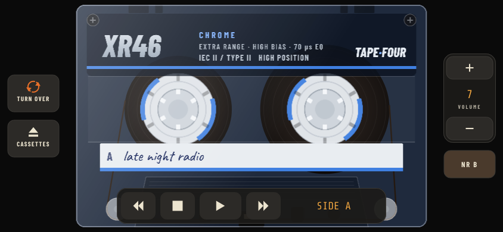

The TF-P1 Pocket is a personal cassette player, like the one you might have carried in the 1980s, except that it lives on your phone or computer. It plays .cass cassettes: tapes recorded on TAPE·FOUR, the four-track cassette recorder.
A .cass file is not an ordinary music file. It is a complete cassette: the tape itself, with everything recorded on it, and what the cassette looks like. The Pocket shows you that cassette, with its shell and its handwritten label, and plays it the way a good portable cassette player would.

You don't need to know any of this to enjoy the Pocket. But a cassette behaves differently from a music file, and knowing why makes it more fun.
Inside a cassette is a long, thin ribbon of tape wound between two spools. When you press PLAY, the tape is pulled past the player's head from the left spool to the right one, slowly, at the same speed every cassette player in the world uses. The sound is stored along the tape, so to get to a song you wind the tape to it: fast forward or rewind, as on a real cassette player. There is no jumping straight to a track.
On the Pocket you see this happen. At the start of a side, nearly all the tape is on the left spool. As it plays, the left spool shrinks and the right one grows. The tape always moves past the head at the same speed, so the small spool has to turn faster than the big one, and you can see that too.
At each end of the tape is a few seconds of clear plastic leader, which carries no sound. A cassette that is fully rewound plays a few seconds of silence before the music starts, just like a real one.
The tape is only half used by each side. Side A is recorded along one half of the tape's width, and side B along the other half, running the other way. When side A finishes, all the tape is on the right spool; turn the cassette over and that full spool is now on the left, ready to play side B. That's why the Pocket always shows which side is up, and why the label shows A or B.

The number on a cassette is how many minutes of tape it holds, both sides together: a C-60 plays for 30 minutes a side, a C-90 for 45, a C-46 for 23. A side doesn't have to be full. The Pocket simply plays silence where nothing was recorded, as a real cassette would.
Cassettes come in different kinds of tape, and each kind has its own sound. TAPE·FOUR makes four:
| Tape | Kind | What it sounds like |
|---|---|---|
| BASIC | Normal (type I), the everyday tape | Warm, with the most hiss. Loud, bright sounds soften. |
| SD | Normal (type I), a better one | Clear and lively, with less hiss. |
| XR | Chrome (type II) | Crisp treble and low hiss. |
| MX | Metal (type IV) | The cleanest of the four: the least hiss and the most clarity. |
A real player needs to know which kind of tape is in it, so it can play it back with the right tone. Cassettes have small notches on top that tell the player, and the Pocket reads them too: it sets itself for each cassette automatically. There is nothing for you to set.
All tape has a faint background hiss, like a quiet "shhh" between songs. It's part of the sound of a cassette, and the Pocket keeps it. How much you hear depends on the tape type, and on the cassette's age and condition.
To reduce the hiss, a recording can be made with noise reduction (NR). It works in two halves: when the cassette is recorded, the quiet parts are made a little louder and brighter; when it's played, the player turns them back down, and the hiss goes down with them. The two halves have to match. The Pocket knows every system TAPE·FOUR records with, and plays each cassette with the one it was recorded with. The key shows which: NR 2:1, NR B or NR C.
A cassette made in TAPE·FOUR can be new, or it can be given some history: a little more hiss, the odd dropout where the tape coating is thin, slightly dull treble. That history is part of the cassette and plays the same on every player. The Pocket's own mechanism adds a touch of the gentle wobble in pitch (called wow and flutter) that every portable player has. It's small, and it's what makes it sound like a cassette rather than a file.
Cassettes are made on TAPE·FOUR. You can make your own, or play ones other people send you.
TAPE·FOUR saves any cassette as a .cass file:
TAPE·FOUR asks where to save the file, starting in Documents/TapeFour.
A .cass file can be shared like any other file: by email, in a messaging app, through a cloud drive (iCloud Drive, Google Drive, Dropbox, OneDrive), with AirDrop, or on a USB stick. Whoever receives it gets the same cassette, sound and looks included.
You can also copy cassettes straight into the Pocket's folder in the Files app, under On My iPhone › TF-P1 Pocket, from a computer or a cloud drive. The next time you open the Pocket they appear on the cassette shelf, newest first.
Or, in the Pocket, tap the cassette to show the keys, tap CASSETTES, then OPEN, and pick the file.
Any of these puts a cassette in:
On a computer the Pocket plays the cassette where it is: it doesn't make a copy.
Every cassette you play goes on the shelf. Tap CASSETTES to see it: the most recently played first, each with its own shell and label. Tap one to put it in. It starts where you left it, on the side you left up.

The shelf holds your 24 most recently played cassettes. Playing an older one puts it back at the front. When the Pocket opens, it puts back in the cassette you were last listening to.
| iPhone, iPad | In the Pocket's own folder, which the Files app shows under On My iPhone › TF-P1 Pocket. To remove a cassette, delete it there; to back it up, copy it from there. |
| Android | In the Pocket's own private storage. Other apps can't see it, and it doesn't fill your Documents or Downloads with big files. Uninstalling the Pocket removes these copies, so keep the originals somewhere (on a computer or in a cloud drive). |
| Computer | Wherever you keep them; the Pocket plays them from there. If you move or rename a cassette, it disappears from the shelf the next time you tap it there. Open it again from its new place and it goes back on. |
Hold the phone sideways. The cassette fills the screen. Tap anywhere on the cassette to show the keys, and tap again to hide them, so you can watch the tape go round. When you first put a cassette in, the keys show so you can see where they are.


| Key | What it does |
|---|---|
| ◀◀ Rewind | Winds the tape back towards the start of the side. Like a real player, it starts slowly and speeds up as the spool it's winding onto fills; a whole side takes a couple of minutes. Press STOP to end it, or PLAY to listen as it winds (see below). |
| ■ Stop | Stops the tape. |
| ▶ Play | Plays. The key lights orange while the tape is playing. At the end of a side the tape stops by itself. |
| ▶▶ Fast forward | Winds the tape on towards the end of the side, the same way. |
| TURN OVER | Takes the cassette out, turns it over and puts it back in: side B if side A was up, and the other way round. The tape stops first. The place on the tape stays the same, seen from the other side. |
| CASSETTES | Opens the cassette shelf (chapter 5). |
| NR | Noise reduction on or off (chapter 2). When it's on, it shows the system the cassette was recorded with. |
| + / −, VOL | The volume, 0 to 10. |
Like most personal cassette players, the Pocket has no counter. The display shows only which side is up (SIDE A or SIDE B). You see where you are from the spools: at the start of a side the tape is nearly all on the left, halfway through the two spools are the same size, and near the end it's nearly all on the right.
To find a song, listen while you wind. Press fast forward or rewind once: the tape winds at about a third of full speed with the head touching it lightly, and you hear it faintly, high-pitched going forward and backwards going back (cue and review). The display shows CUE or REVIEW. The gaps between songs stand out as short silences. Press PLAY to play from there. Press the same wind key again to wind at full speed, silently; the other wind key reverses and keeps listening.
On a phone, the Pocket has just one volume, the phone's own media volume. The phone's side buttons and the Pocket's + and − keys change the same thing, and the number on screen always shows where it is. On a computer the Pocket has its own volume slider, separate from the computer's.
The keys sit in a row under the cassette, with the side display and the volume slider. The keyboard works too:
| Key | Does |
|---|---|
| Space | Play / stop |
| → | Fast forward |
| ← | Rewind |
| ↑ / ↓ | Volume up / down |
| Esc | Close the cassette shelf |
Whenever you close the Pocket or switch to another app, it remembers the cassette, the side and the place. Next time, the same cassette is in, on the same side, where you left it.
| Question | Answer |
|---|---|
| I press PLAY and hear nothing. | Check the volume (the number on screen) and the phone's silent switch or the computer's sound output. At the very start of a side the leader takes a few seconds to pass. Then look at the spools: the tape may be on a part of the side where nothing was recorded. Rewind, or turn the cassette over. |
| Side B is silent. | Not every cassette has something on side B. A four-track tape from TAPE·FOUR uses the whole width of the tape for its four tracks, so it has no separate side B: turned over, it plays its tracks backwards, as a real four-track tape does. |
| It says COULD NOT OPEN. | The file isn't a complete cassette. It may not have finished downloading or copying, or it may not be a .cass file at all. Get a fresh copy and try again. |
| The cassette looks plain, or different from how it looked in TAPE·FOUR. | A cassette from an early version of TAPE·FOUR may not carry its look. The Pocket then draws the standard shell for its tape type, with its label. Exporting it again from a current TAPE·FOUR fixes it. |
| It sounds dull, or the hiss rises and falls. | Check the NR key. Normally leave it on: the Pocket then uses the system the cassette was recorded with. With NR off a cassette recorded with noise reduction sounds bright and hissy; that's expected. |
| The pitch wobbles slightly. | That's the Pocket's mechanism: a small amount of wow and flutter, as every portable cassette player has. An old or worn cassette can add a little more of its own. |
| A cassette has vanished from the shelf. | On a computer the file was moved, renamed or deleted; open it from its new place. On a phone, the shelf keeps the 24 most recently played; copy the cassette in again to bring an older one back. |
| Can I record with the Pocket? | No. It's a player: it never changes a cassette. Record on TAPE·FOUR. |
| Model | TF-P1 Pocket, stereo cassette player |
| Plays | .cass cassette files (version 1): TAPE·FOUR master tapes (stereo, two sides) and four-track tapes |
| Tape types | Normal (type I), chrome (type II) and metal (type IV); set automatically from the cassette |
| Tape speed | 4.76 cm/s (1⅞ in/s), the standard cassette speed |
| Wow and flutter | 0.18 % wow, 0.12 % flutter, like a good portable |
| Speed accuracy | +0.4 %, a portable's typical slight haste |
| Frequency response | Heads to about 14 kHz |
| Noise reduction | 2:1 compander, sliding band B, sliding band C: the one each cassette was recorded with; switchable off |
| Volume | 0 to 10. Phones: the phone's media volume (side buttons and on-screen keys). Computers: the player's own |
| Fast wind | About 110 seconds for a side of a C-60; the tape speeds up as it winds |
| Cue and review | Fast forward or rewind pressed once: the tape heard faintly as it passes. Pressed again: full speed |
| Counter | None (the display shows the side) |
| Memory | The side and place of each of the last 24 cassettes played |
| Runs on | iPhone and iPad, Android phones and tablets (Android 7 or later), Windows, macOS, Linux |
TAPE·FOUR and the TF-P1 Pocket are made by 78Hz. The .cass format is open and documented, so other programs can make cassettes the Pocket plays.